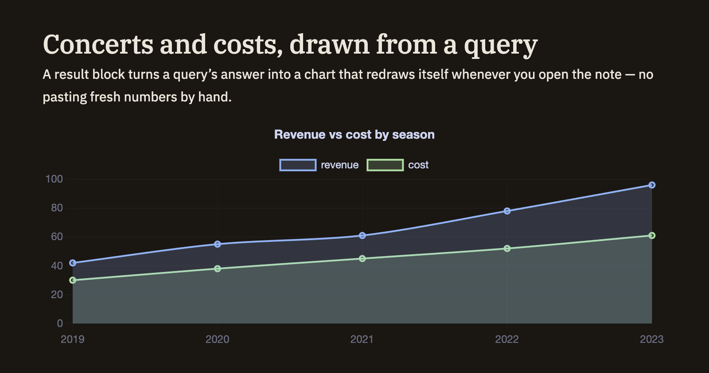

Docs/Working with data/Result blocks
Result blocks
A result block puts a query's answer right inside a note and keeps it up to date — as a list, a table, or a chart that refreshes on its own whenever you open the note. You don't have to paste in fresh numbers by hand. The easiest way to create one is the Query panel's "Copy as…" menu (see Query menu & panel), which builds the block for you, but you can also write one yourself.
Lists & tables
A result block can show your query's answer as a simple list or as a full table. A few settings let you shape what appears:
Tables sort just like results in the Query panel — click a column heading to switch between ascending and descending order.
Charts
When your results are numbers over time, a result block can draw them as a chart instead of a table. You choose which column runs along the bottom, which values to plot, and the look — a line, bars, or a filled area — along with an optional title and height.

Know a table's columns before you query
When you're about to query a table you brought in, it helps to see its real column names first. Two ready-made queries do exactly that: Describe schema lists the columns, and Summarize adds a quick statistical snapshot of each one. As you type a query, Minerva also suggests the actual column names for you.